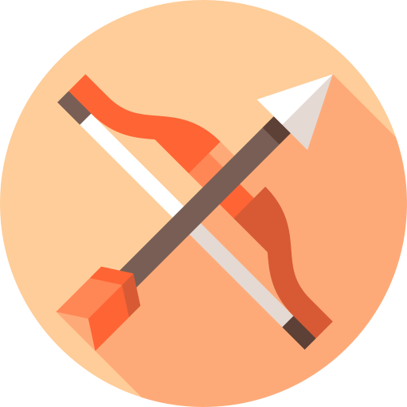

Horoscope du jour

Poisson
Votre code est tellement parfait que vous vous sentez atteindre la félicité, vous avez franchi une étape dans votre voyage cosmique, vos chakras sont grand ouverts. Du coup, vous n'osez plus y toucher.

Verseau
Vous vous êtes lancé dans un grand débat sur les bienfaits de l'immutabilité des objets pour prouver par A+B à vos collègues que le Javascript c'est naze. Ils sont retournés faire du PHP.

Capricorne
Vous êtes angoissé par la deadline du projet qui se rapproche dangereusement. Prenez des vitamines et du magnésium. Et méfiez-vous des collègues Scorpion.
Sagittaire
Vous refusez de vivre selon les diktats des bonnes pratiques et vous décidez de vous lancer dans le développement de votre propre langage. Puis vous réalisez que votre langage a aussi ses bonnes pratiques, et vous retournez faire du Javascript, comme tout le monde.

Scorpion
Vous êtes titillé par une envie de supprimer tout le code du projet et de tout recommencer from scratch. Attendez plutôt le mois prochain. L'alignement des planètes sera meilleur, et surtout, la deadline sera passée.

Balance
Vous vous sentez concerné par l'ambiance dans l'équipe du projet, du coup vous lisez les horoscopes de tout le monde. N'oubliez pas que les Taureau ne croient pas à l'astrologie, de toute façon.

Vierge
Vous mettez les petits plats dans les grands: code commenté, externalisation sous forme de webservices, refactorisation au top... Pensez juste à tester votre code de temps en temps pour vérifier qu'il fonctionne.

Lion
Tout vous réussit cette semaine: le code est impeccable, le projet avance à grands pas. N'oubliez pas de payer les développeurs qui travaillent pour vous.

Cancer
Le télétravail rend votre vie de couple compliquée. Evitez d'amener l'ordinateur dans votre lit, il pourra survivre la nuit dans le salon.

Gémeaux
Arrêtez de maudire vos collaborateurs qui cassent votre code à chaque fois, et rappelez-vous que vous êtes seul à travailler sur ce projet.

Taureau
Vous ne croyez pas en l'astrologie de toute façon, donc si vous lisez ça, c'est que vous n'êtes pas Taureau, mais plutôt Balance.
Bélier
Votre code sera truffé d'erreurs cette semaine. Mais vous gardez confiance: l'ordinateur va finir par céder.